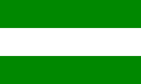
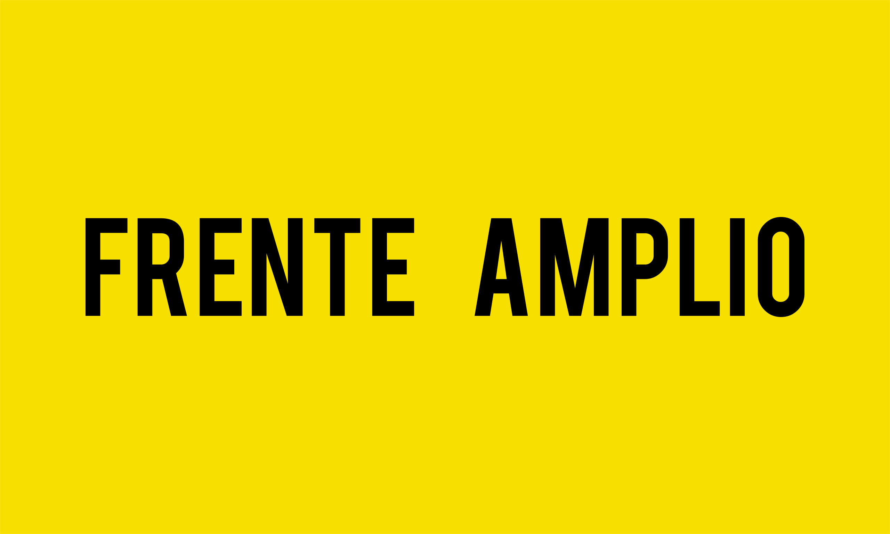

| Foto Candidato | Link sobre candidato |
|---|---|
| Jose Maria Figueres | |
| Rodrigo Chaves | |
| Fabricio Alvarado | |
| Jose Maria Villalta |
| Partido | Candidato | Encuesta 1 | Encuesta 2 |
|---|---|---|---|
|  | Jose Maria Figures | 14% | 17% |
| Rodrigo Chaves | 1% | 5% | |
| Fabricio Alvarado | 13% | 20% | |
|  | Jose Maria Villalta | 3.1% | 3% |